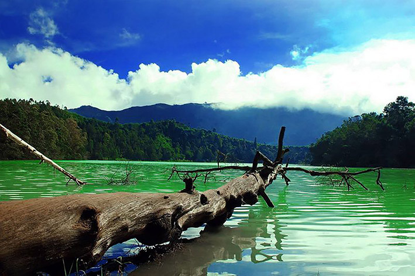
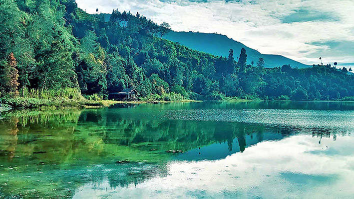
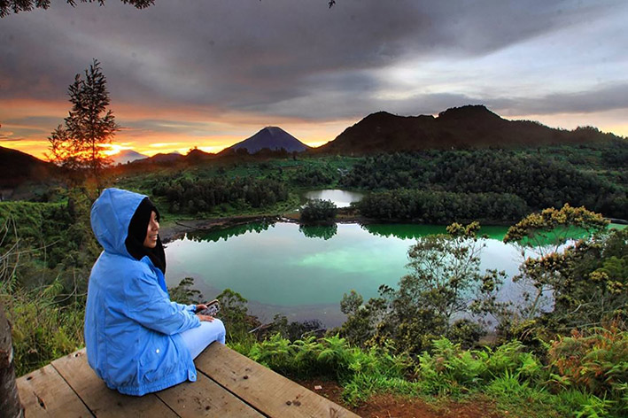

Telaga Warna Dieng
Telaga Warna, merupakan salah satu tempat wisata andalan yang terletak di Dieng wonosobo, jawa tengah. Danau ini mempunyai nama Telaga warna pun bukan tanpa sebab, yaitu karena telaga ini mempunyai warna yang bisa berubah ubah. Telaga ini kadang berwarna hijau, kuning dan pelangi. Hal tersebut karena telaga tersebut terdapat kandungan sulfur yang cukup banyak dan ketika tersorot sinar matahari maka warna air tersebut akan berubah warna.
Telaga warna juga merupakan telaga terluas yang ada di dataran tinggi diantara telaga telaga yang lain seperti telaga pengilon, telaga merdada dan masih banyak lagi. Telaga warna sendiri mempunyai luas kira 3 kali lapangan sepak bola.

Telaga warna dieng terletak di ketinggian 2000 meter diatas permkaan laut. Telaga tersebut juga dikelilingi oleh bukit bukit yang indah yang cocok sebagai tempat untuk refreshing. Jika anda ingin mendapat sensai keindahan yang lebih, anda bisa menaiki salah satu bukit yang ada di telaga warana. Dan yang paling populer yaitu bukit ratapan angin. Dari situ lah anda bisa duduk di sebuah batu sambil menikmati telaga warna dari atas bukit.
Waktu yang paling di rekomendsaikan untuk mengunjungi telaga warna adalah pada waktu pagi hingga siang hari. Soalanya kalo anda berkunjung di sore hari kemungkinan kawasan telaga di selimuti dengan kabut. Jika anda berkunjung ke telaga tersebut pada waktu pagi hingga siang maka anda akan bisa melihat telaga yang benar benar berwarna, karena pada waktu tersebut pancaran sinar matahari sedang terik teriknya.

Selain terdapat telaga yang indah, disekitaran telaga tersebut juga terdapat berbagai macam goa yang bisa anda nikkmati, dinataranya yaitu goa semar, goa sumur eyang kumalasari, goa pengantin dan juga gua jaran. banyak keunikan dari masing masing gua tersebut, sperti goa semar yang mempunyai keunikan terdapat kolam yang kecil di dalam goa dan air tersebut di percaya dapat menyembuhkan berbagai macam penyakit dan jug dapat membuat kulit menjdi lebih cantih atau awet muda. Di depan goa semar juga terdapat patung semar yang membawa kendi.

Untuk harga tiket masuk pun tidak begitu mahal, beberapa bulan yang lalu saya dan teman teman berkunjung ke telaga tersebut di kenai harga tiket masuk sebesar Rp. 7000 per orang di tambah parkir untuk mobil sebesar 5000 rupiah dan 2000 rupiah untuk kendaraan roda dua.